Advanced Turbines
U.S. Fleet Dashboard — Development History
DOE Tableau User Group · Gabe DeWitt
Gabe DeWitt, PE


My Art

Astrophotography · Aurora · Watercolor · Ink pointillism
My Work

US Turbine NETL Data Analysis Timeline
Eight Eras of Data
Each era multiplied the scope — and the complexity. ↓
ERA 1 · 2024
Original Dataset
ERA 2 · 2024
Initial Analysis & EIA Crossing
ERA 3 · 2024
Tableau Logic Development
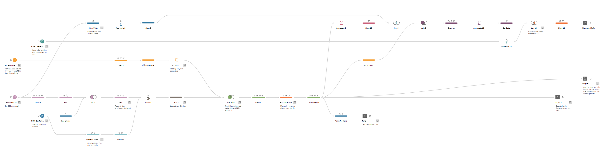
ERA 4 · October 2024
Initial Dashboard Construction
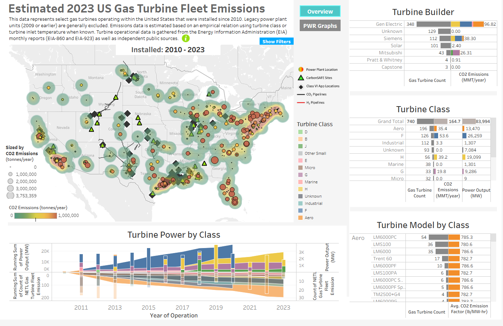
ERA 5 · Early 2025
First Major Data Expansion
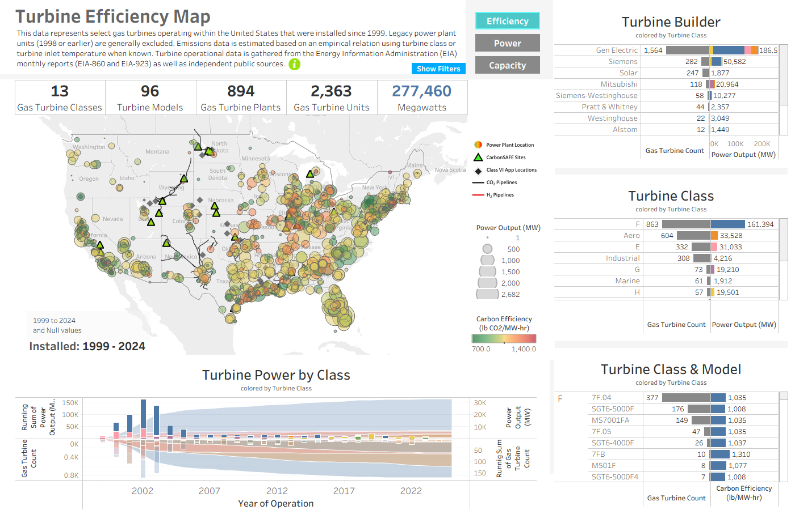
ERA 6 · August 2025
First Major Dashboard Update
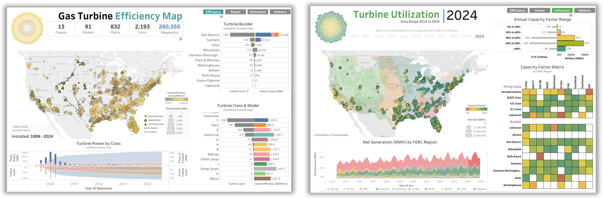
ERA 7 · February 2026
Second Major Dashboard Update
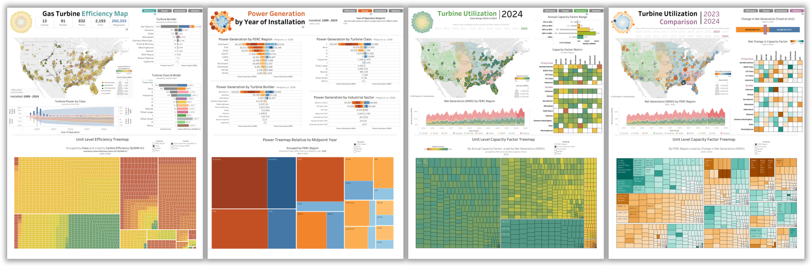
ERA 8 · 2026 · Current
Current Efforts
How do you scale a project like this?
One person. 2 MB → 100 GB. You bring in a co-pilot.
The Dashboard Today
Diving Into the Data
Turbine utilization differs significantly by region — let's look. ↓
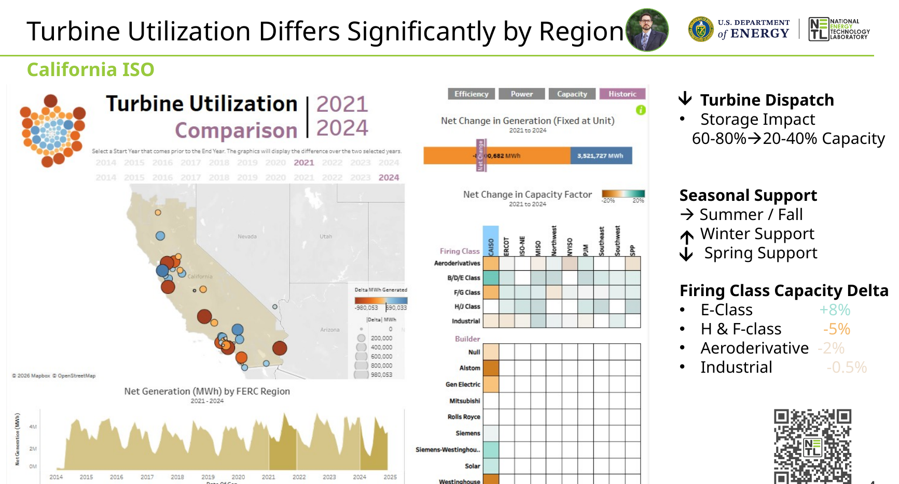
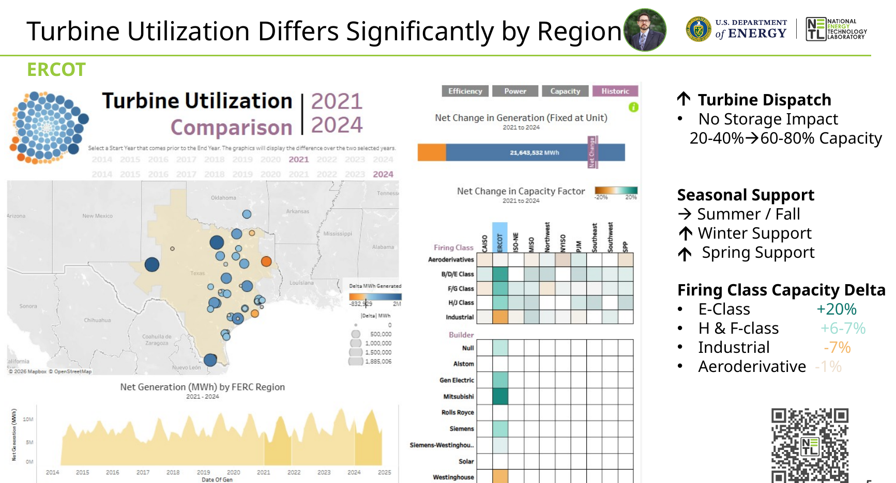
Enter DOE's AI Platform
Joulix / EnerGPT
DOE's internal AI productivity suite.
What It Is
- An AI developed by IM-50 at the Department of Energy
- Component of Joulix, a broader AI productivity suite
- Designed for accurate information & analysis in DOE-relevant areas
- Helps users understand data and accelerate their work
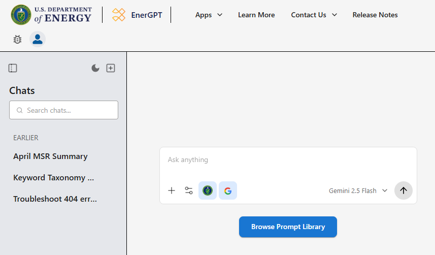
Empowering Tableau Experts
Accelerate Insights & Enhance Dashboards
Smart Data Prep
Suggests & generates code to clean, transform, integrate — Tableau-ready
SQL Generation
Writes queries so you pull exactly the data you need
Calc & Viz Help
Drafts calculated fields and suggests chart approaches
The Data Scientist's AI Co-Pilot
Boost Productivity & Deepen Analysis
Code Gen & Debug
Writes & debugs Python/R for manipulation, stats, and ML
Statistical Analysis
Helps design and interpret analyses
Documentation
Generates SOPs and explanations you can hand off
How I Use Joulix
"AI" as a
User Interface
Rule #1 — understand it's just a machine doing machine things.
What's Actually Happening
It is not thinking. It is calculating.
Pattern recognition at a scale orders of magnitude beyond anything before — predicting the next token from billions of examples.
Once you treat it like a machine, you prompt it like one — and it gets dramatically more useful.
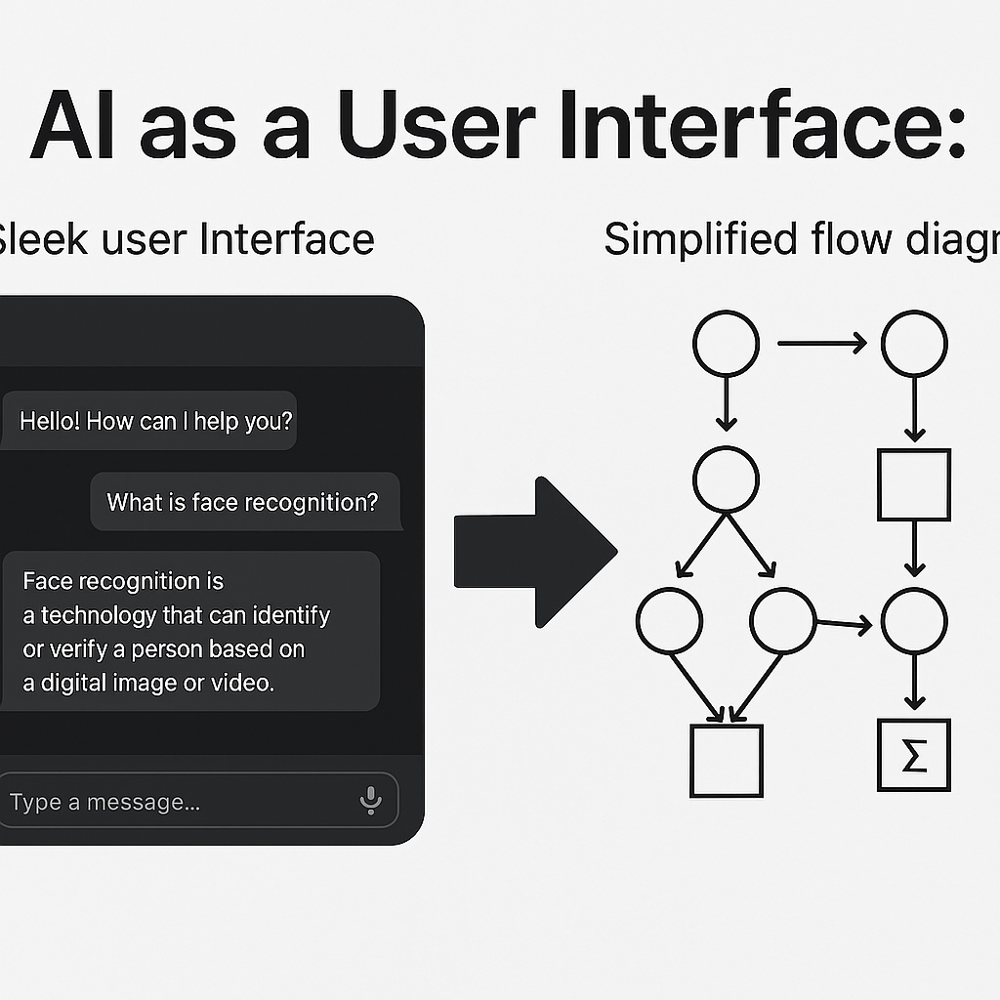
The Trick
Talk to it like a robot. Be explicit. Iterate.
You: Free-write what you want. Then free-write how you think you'd do it.
It: Fills in the engineering — the syntax, the edge cases, the boilerplate.
You provide the vision. The AI fills in the execution.
How I Use Joulix · talk to it like a robot
I free-write what I want, then how I'd do it
I'd like you to a write python script to go through this hourly data file, emissions-hourly-2024-q1_100k.csv. This is just an export of 100k rows as the full data set is about 7 gigs. I only want to look at IDs that match another data set I have NETLTurbineID.xlsx. In my hourly data, a new Column "UniquID" will be added based on [Facility ID] + " – " + [Unit ID] in the hourly data set. My resulting data will only keep Unique IDs matched between NETLTurbineID.xlsx and emissions-hourly-2024-q1_100k.csv. I'd like to begin by loading this data into a data frame for analysis, visualization and data transformation exports. This is where we'll start.

Joulix outputs python I can run · VS Code
How I Use Joulix · be explicit
Now I want a GUI tool — so I ask for one
I want to focus on your thoughts toward creating this GUI analysis tool first. I want to add two core functions to this:
The first output I need is based on a calculations at the day level of the number of starts and stops of a generator unit each day. This is inferred by counting the number of times in a day [Date] in the order of [Hour] starting at 0 and ending at 23, a generator [UniqueID] has a value in [Gross Load (MW)], and then when that value goes to 0, in a day.
The resulting Table or data frame would be aggregated at the day for each UniqueID with it's "Total Starts" and "Total Stops" in a day, for all days in the data set. And I'd like the ability to export that table.

It built an interactive Streamlit Dashboard
How I Use Joulix · the results
US Gas Turbine Analysis
Dashboards constructed in Tableau — from data processed with python via EnerGPT.
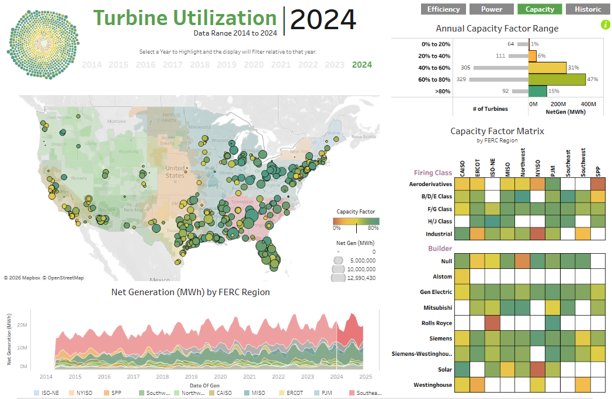
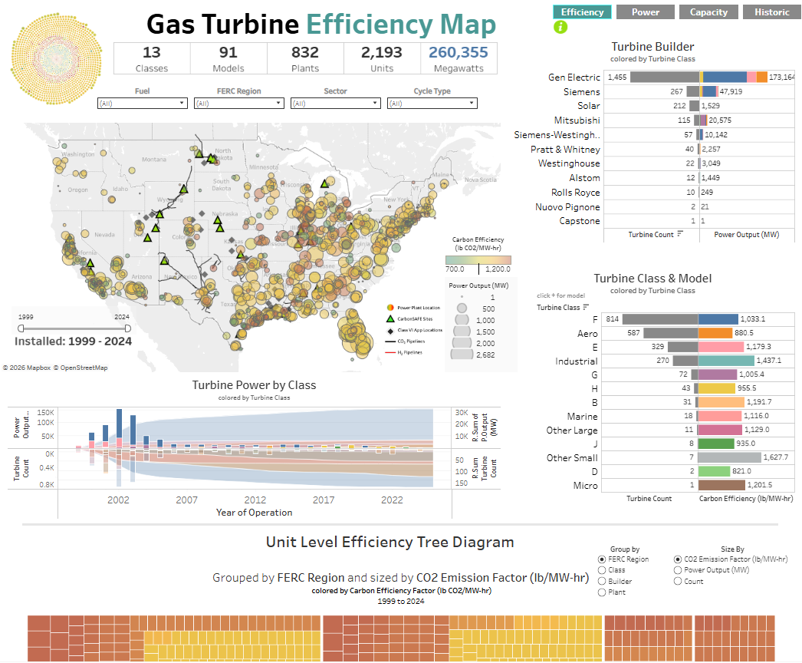
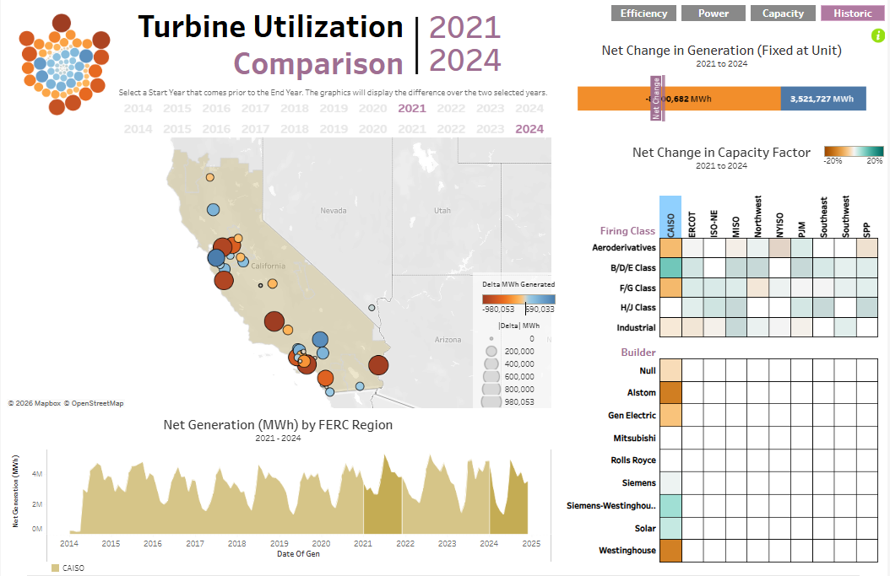
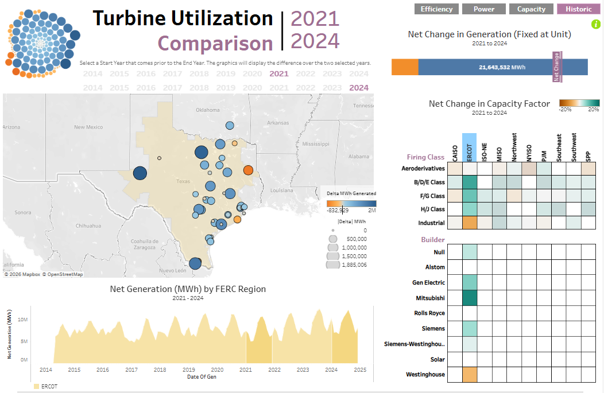
How I Use Joulix · using EnerGPT with Tableau directly
AI-generated SOP — Radial Sunburst in Tableau, fully parameterized
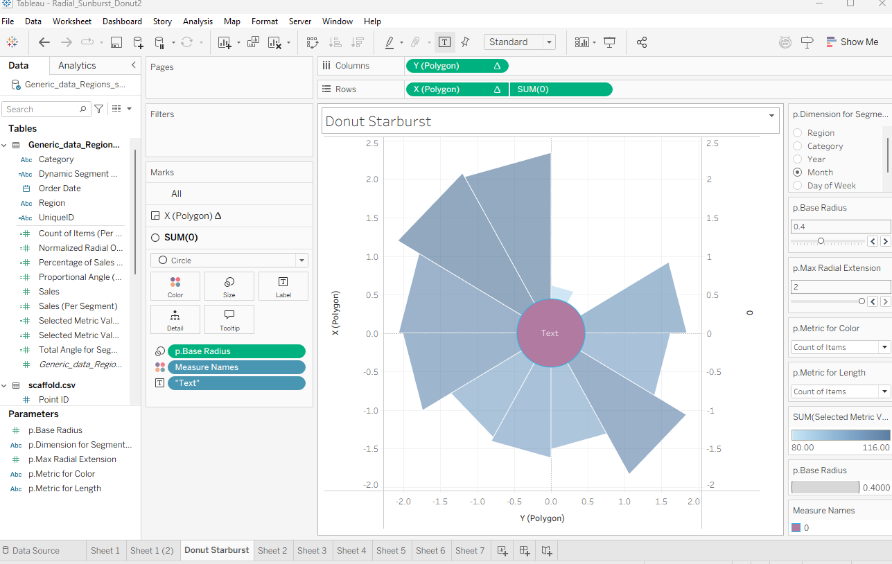
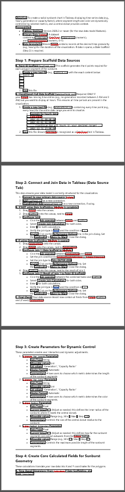
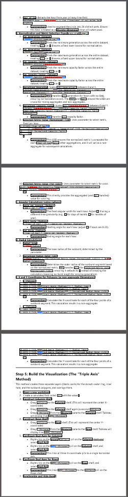
How I Use Joulix · using EnerGPT with Tableau directly
Radial Sunburst applied to EPA hourly generator data
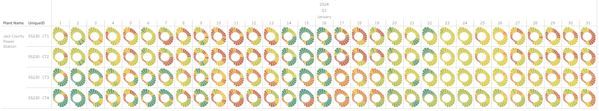
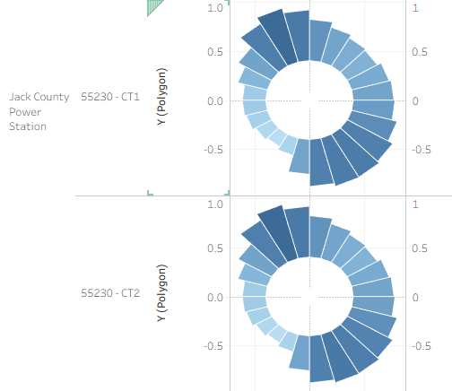
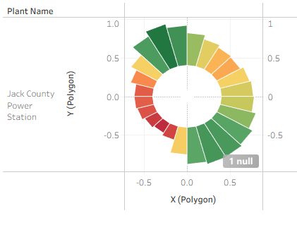
Understanding the AI Landscape
Range of Base-Model Capabilities
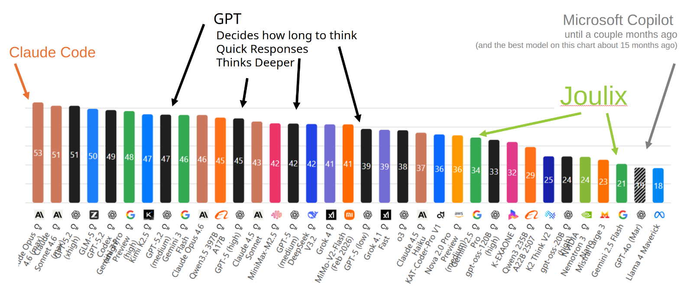
From Assistant to Agent
The Rise of LLMs

The story isn't just speed — it's exponential growth in complexity AI can handle.
Understanding AI Modalities
Picking the Right Tool for the Job
💬 Chatbots
ChatGPT, Claude, Gemini
Text, code, images, reasoning
🖥️ Copilot IDEs
Cursor, VS Code, Windsurf
Edit, run, debug in your editor
⌨️ CLI Agents
Claude Code, Codex, Gemini CLI
AI does anything a human can from terminal
🎨 Image Gen
Midjourney, DALL·E, Stable Diffusion
Text → images, style transfer
🎬 Video Gen
Sora, Runway, Kling
Text → video, motion, VFX
🧊 3D Gen
World Labs, Tripo, Meshy
Text/image → 3D models
We've Seen This Before
Every transformative tool faced the same resistance pattern. ↓
The Calculator 1970s
"Calculators will destroy children's ability to do math!"
They were kind of right. 😄
But the engineers who embraced them built rockets.
AutoCAD 1980s
"This will ruin the craft of drafting!"
Every drafter who refused to learn it was replaced by one who did.
The craft didn't die. It evolved.
Photoshop 1990s
"Digital art isn't real art!"
Now it's the industry standard.
The artists who learned it first got the jobs.
Digital Photography 2000s
"Digital will never match film!"
Kodak believed that. Filed for bankruptcy in 2012.
The photographers who switched early defined the next era.
Cloud & 3D Printing 2010s
"It's not real craftsmanship / it's not real infrastructure!"
Now designers, architects, and IT run on both daily.
It didn't replace hands or servers. It extended them.

"They took our jobs…"
Every. Single. Time.
AI Tools 2020s
"AI will replace us!"
No.
People who USE AI replace people who DON'T.
Devil's Advocate
The foundation
still matters.
Knowing how film works makes you a better digital photographer.
Understanding structures makes you a better modeler.
Tools raise the ceiling — but knowledge is the floor.
When the Floor Disappears
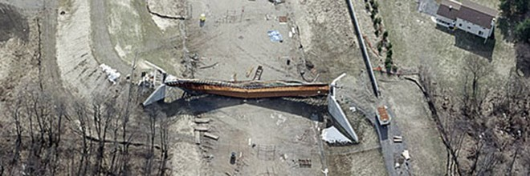
Marcy Pedestrian Bridge collapse
Marcy, New York · October 2002
Curved steel tub girder buckled during concrete deck placement — 1 ironworker killed, 9 injured.
No top-flange bracing on the steel tub girder. Lateral torsional buckling under construction loads.
The software modeled the finished composite section perfectly.
Nobody checked the construction sequence.
The tool was right about the wrong question.
When Foundational Learning Is Skipped
People will skip it.
They'll ship code they can't read,
designs they can't evaluate,
results they can't verify.
The risk isn't the tool — it's trusting output
you can't check.
Devil's Advocate
The Environmental Cost
AI training and inference consume massive energy. This is real.
Same pattern as every tech we've adopted fast — cars, air travel, smartphones, streaming, crypto. We consume first, reckon later.
It needs solving. Not ignoring.
The blank page
is gone.
You'll never again stare at an empty screen wondering where to start. Ask for ideas, a synopsis, a first draft.
Never lose your love for the pleasure of finding things out.
And always keep your hand on the wheel.
Questions?
2 MB → 100 GB. The work grew in orders of magnitude.
AI didn't do the work.
It raised the ceiling on what one person can build.
Use the tools, but keep your hand on the wheel.
Gabe DeWitt · DOE Tableau User Group
If We Have Time…
Show & Tell
The same AI tools, applied to my own art & side projects. ↓
Art I've Done with AI
Before the chatbots. Before the hype.
StyleGAN · NVIDIA · 30,000 iterations · 100% GPU for a week
The Pipeline
 →
→
 →
This
taught
this
taught
this.
→
This
taught
this
taught
this.
AI Art Videos
So What?
These look pretty. They make cool posts.
But they serve no purpose.
I hadn't collected the data I needed.
The process wasn't what I thought it could be.
The interesting part isn't the output.
It's that I could attempt it at all.